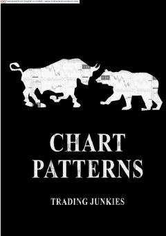

TJForex bozoridagi asosiy grafik naqshlari va ularni tahlil qilish bo'yicha amaliy qo'llanma.
Ushbu qo'llanma Forex bozoridagi asosiy grafik naqshlarini tushuntirib beradi. Unda narxlar harakatini bashorat qilish uchun davomiy va teskari naqshlar, shuningdek, buqa va ayiqcha signallari batafsil yoritilgan.